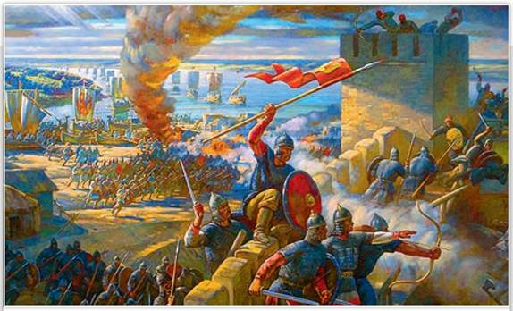
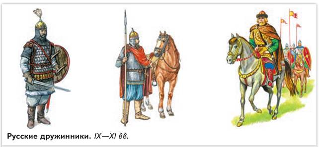
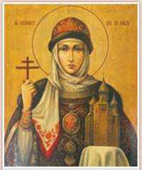
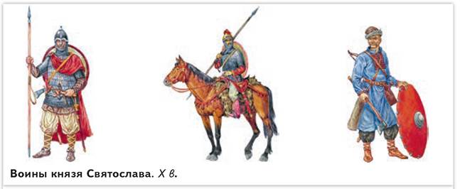
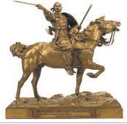

Святослав. Разгром Хазарии. Фрагмент. Художник А. Булдаков. 2009 г.
На картине изображена хазарская крепость Саркел (от тюркского «Белая башня» — «дом», «крепость»), которую разгромил русский князь Святослав. На Руси её назвали Белой Вежей.
РОССИЯ
МИР
1. Княжеская власть в X в. В 912—945 гг. престол (или княжеский стол) в Киеве занимал сын Рюрика Игорь. Он, так же как и Олег, с дружиной ходил в полюдье. Дружина делилась на старшую и младшую. Служилую знать — старших дружинников — историки называют боярами. Выше бояр были только князья. В IX—X вв. благополучие старших дружинников зависело от щедрости князя. Из числа старшей дружины князь назначал воевод (военачальников) и наместников. Старшим дружинникам князь жаловал сбор дани. Это была плата за службу. Помимо славян, в княжескую дружину входили варяги. Летописец сообщает, как воеводе Свенельду (предположительно варягу) Игорь пожаловал сбор дани в земле древлян. Воины младшей дружины «кормились» на княжеском дворе, то есть получали кров, еду, одежду и оружие.

Чем различалось положение старших и младших дружинников?
2. Роль внешней торговли на Руси. Первые киевские князья, судя по летописи, имели в собственности отдельные сёла и городки. Но основу их богатства составляли не эти владения и даже не дань от подданных и побеждённых в войнах. В IX—XI вв. княжеская казна пополнялась от международной торговли по пути «из варяг в греки» — в то время главной торговой дороги между Западной Европой и Византией. В нижнем течении Днепра у порогов на суда нападали печенеги. Киевский князь и его дружина обеспечивали охрану торговых караванов от степняков, взимали пошлины с купцов в городах, принимали на зимовье заморских гостей. Восточным и западным странам Русь продавала зерно, пушнину, мёд, воск, лён и льняные ткани, а покупала металлы, ремесленные инструменты, оружие, предметы роскоши, пряности, паволоки и парчу — вышитые золотой и серебряной нитью шёлковые ткани. На рынках Константинополя продавали рабов, захваченных в войнах.
Внешняя торговля принесла на Русь столько западного и восточного серебра, что роль денег стали играть гривны — серебряные слитки. Имели хождение и «меховые» деньги — куны — шкурки куницы или других ценных пушных зверей. В ходу также были арабские дирхемы и византийские монеты. Центром торговой и политической жизни на Руси оказались города, основанные вдоль пути «из варяг в греки».
3. Походы Игоря на греков. Восстание древлян. Князь Игорь то воевал с печенегами, то заключал с ними мир. В 941 г. он ходил на византийцев и потерпел от них поражение. Его корабли были сожжены «греческим огнём». Так называли горючую смесь на основе нефти.
В 944 г. Игорь с дружиной снова двинулся на Византию. В устье Дуная их встретили послы византийского императора. Они предложили Игорю дань и просили его не ходить на Константинополь. Князь советовался с дружиной. «Если так говорит цесарь, то чего нам ещё нужно, — не бившись, взять золото, и серебро, и паволоки? Разве знает кто — кто одолеет: мы ли, они ли?» — передаёт летописец ответ дружины своему князю. Игорь согласился и взял у послов богатые дары. В том же 944 г. был заключён новый торговый договор Руси с Византией. Он повторял условия договора
СВИДЕТЕЛЬСТВО ЭПОХИ
Из «Повести временных лет»
В год... 945. В тот год сказала дружина Игорю: «Отроки Свенельда изоделись оружием и одеждой, а мы наги. Пойдём, князь, с нами за данью, и себе добудешь, и нам». И послушал их Игорь — пошёл к древлянам за данью и прибавил к прежней дани новую, и творили насилие мужи его. Взяв дань, пошёл он в свой город. Когда же шёл он назад, — поразмыслив, сказал своей дружине: «Идите с данью домой, а я возвращусь и похожу ещё». И отпустил дружину свою домой, а сам с малой частью дружины вернулся, желая большего богатства. Древляне же, услышав, что идёт снова, держали совет с князем своим Малом: «Если повадится волк к овцам, то вынесет всё стадо, пока не убьют его; так и этот: если не убьём его, то всех нас погубит». И послали к нему, говоря: «Зачем идёшь опять? Забрал уже всю дань». И не послушал их Игорь; и древляне, выйдя из города Искоростеня, убили Игоря и дружинников его, так как было их мало.
Какие личные качества князя Игоря стали причиной его гибели?
911 г., но устанавливал торговые пошлины для русских купцов и с наступлением осени обязывал их вернуться на Русь. В 945 г. Игорь погиб от рук древлян, не пожелавших платить ему повторную дань.
4. Правление Ольги. После гибели Игоря киевским князем стал его четырёхлетний сын Святослав. Управление государством оказалось в руках его матери Ольги (945—964). Летопись содержит подробный рассказ о мести Ольги древлянам за убийство мужа. Княгиня истребила древлянскую знать и сожгла их город Искоростень (ныне Коростень на западе Украины). Она установила норму дани — уроки и определила места её сбора — погосты. Введение уроков и погостов упорядочило отношения между княжеской властью и населением и, по сути, стало первой налоговой реформой.
Согласно летописи, в Константинополе Ольга приняла крещение, получив христианское имя Елена. Её крёстным отцом стал византийский император Константин Багрянородный. Но она не крестила Русь, даже Святослав не принял христианства, как просила его Ольга. «Как мне одному принять иную веру? А дружина моя станет насмехаться», — говорил он матери. Ольга имела контакты и с правителями Западной Европы. Известно, что в 961 г. на Русь приезжали посланцы германского императора.

Святая княгиня Ольга. Икона
ИСТОРИЧЕСКИЙ ПОРТРЕТ
Княгиня Ольга
Ольга вошла в историю как первая женщина — правительница Руси. По летописным сведениям, она происходила из Пскова и не принадлежала к роду Рюриковичей. Княгиня, несомненно, обладала твёрдой волей и была человеком государственного ума. Недовольство древлян, вспыхнувшее из-за повторной дани, грозило разрушить основы и без того не слишком прочного государства. В это непростое время Ольга проявила себя как мудрая правительница. Налоговая реформа, проведённая Ольгой, успокоила волнения внутри страны, укрепила княжескую власть. Скорее всего, княгиня понимала: сплотить Русь может единая вера, а поднять престиж своей державы можно не только силой оружия, но и с помощью дипломатии. Историк Н. Карамзин написал в своём сочинении: «Предание нарекло Ольгу Хитрою, церковь Святою, история Мудрою».
5. Походы Святослава. Самостоятельное правление Святослава Игоревича началось в 964 г. Этот князь вошёл в историю как доблестный воин и великий полководец. Конные и пешие воины Святослава прославились необыкновенной храбростью. Мало кто мог одолеть их в бою. Выстроившись в несколько рядов и сомкнув щиты, русские рати шли на врага. Лучники осыпали неприятеля стрелами, ополченцы метали копья и дротики. Конница наносила удары с флангов.
Сначала Святослав двинулся на Волгу. Он покорил вятичей, обложил данью волжских булгар и разгромил Хазарский каганат. В Саркеле (на Дону) и в Тмутаракани (в дельте реки Кубани) возникли русские колонии. Хазарские кочевья заняли печенеги. Историк Б. Рыбаков так оценил победу Святослава над хазарами: «Замки, запиравшие торговые пути русов, были сбиты. Русь получила возможность вести широкую торговлю с Востоком».
Впечатленный громкими победами Святослава, византийский император Никифор II Фока решил нанять его с войском, чтобы победить Болгарское царство. В 967 г. Святослав занял многие города на нижнем Дунае и пленил болгарского царя. Однако, вместо того чтобы отдать покорённые болгарские земли Никифору Фоке, князь замыслил подчинить болгар и вытеснить Византию с Балкан. Такой поворот дела не устраивал греков. Они стали готовиться к войне.

Дружинники облачались в кольчугу — рубаху, сплетённую из металлических колец. Голову в бою защищал шлем конической формы. Деревянный щит оковывали металлом. От европейцев дружина заимствовала мечи и боевые топоры, от азиатов — сабли. Копья использовали как пешие воины, так и конники. К поясу крепился боевой нож. Перед походом Святослав сообщал противнику: «Хочу на вы идти!» (то есть «Иду на вас!»).

Князь Святослав. Скульптор Е. Лансере. Государственный исторический музей. Москва
Планы Святослава по завоеванию Балкан нарушили печенеги. В 968 г. они осадили Киев. Узнав от гонца об опасности, исходившей от степняков, Святослав вернулся-домой. Печенеги отступили. Святослав недолго пробыл в столице. После смерти Ольги он оставил на киевском престоле своего старшего сына Ярополка, а сам снова умчался к Дунаю. Здесь в союзе с болгарами и печенегами он воевал с Византией, но удача от него отвернулась. Под городом Аркадиополем греки разбили войско Святослава и его союзников.
Любопытные детали. Перед одним из сражений Святослав обратился к своим воинам: «Некуда нам деться, надо биться — волею или неволей. Да не посрамим земли Русской, но ляжем костьми тут: ибо мёртвые сраму не имут. Если же побежим — будет нам стыд. Не отступим, но станем крепко. Я пойду перед вами — если моя голова падёт, тогда делайте что хотите». И сказали воины: «Где твоя голова ляжет, там и мы головы наши сложим». Так передаёт слова Святослава автор «Повести временных лет».
Весной 971 г. император Византии Иоанн I Цимисхий запер на три месяца русскую дружину в крепости Доростол. Силы были не равны. Тогда Святослав заключил с греками мир и покинул Балканы. На пути в Киев его подстерегли печенеги. Князь отпустил свою конницу, а сам с малой дружиной зимовал на порогах, потеряв многих воинов, умерших от ран и голода. Весной 972 г., не дождавшись помощи, он попытался пройти высокой водой днепровские пороги. Закипел бой. Здесь и погиб великий князь-воин. Из черепа Святослава печенежский хан Куря приказал сделать чашу для пиров, оковав её серебром.
ПОДВЕДЁМ ИТОГИ
Князь Игорь продолжил политику Олега по налаживанию отношений с Византией, заключив новый договор. Княгиня Ольга, введя уроки и погосты, провела первые государственные реформы. Благодаря военным победам Святослава Русь расширила свою территорию и стала самым крупным государством Восточной Европы.
Вопросы и задания
Работаем с хронологией
Работаем с источником
Прочитайте фрагмент из труда византийского историка Льва Диакона «История» (X в.) и ответьте на вопросы.
Святослав переезжал реку на ладье и, сидя за веслом, грёб наравне с прочими... Был он таков: среднего росту, не слишком высок, не слишком мал, с густыми бровями, с голубыми глазами, с плоским носом, с бритым подбородком и с густыми длинными усами. Голова у него была совсем голая, но только с одной её стороны висел локон волос, означающий знатность рода. Шея была толстая, плечи широкие и весь стан довольно стройный. В одном ухе у него висела золотая серьга, украшенная двумя жемчужинами с рубином... Одежда на нём была белая, ничем, кроме чистоты, от других не отличная.
Работаем с понятиями
Что такое уроки и погосты?
ДОПОЛНИТЕЛЬНЫЕ МАТЕРИАЛЫ
«УЧИТЕЛЮ И УЧЕНИКУ».
Материалы к параграфу на портале «История.РФ»